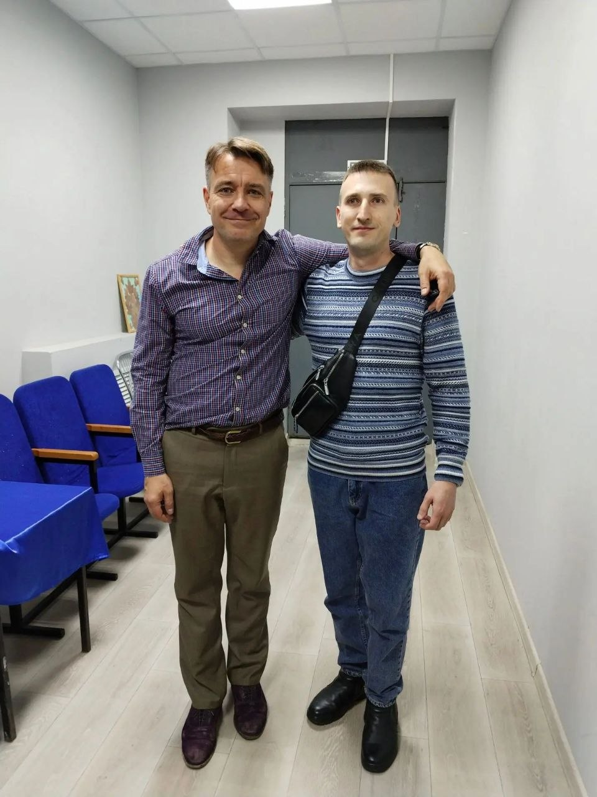
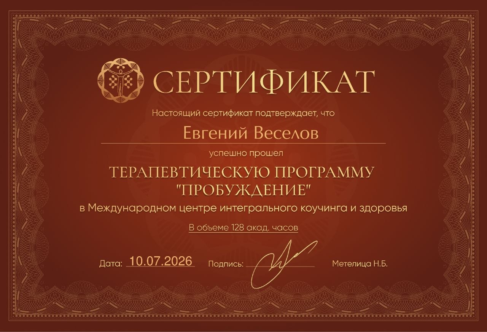
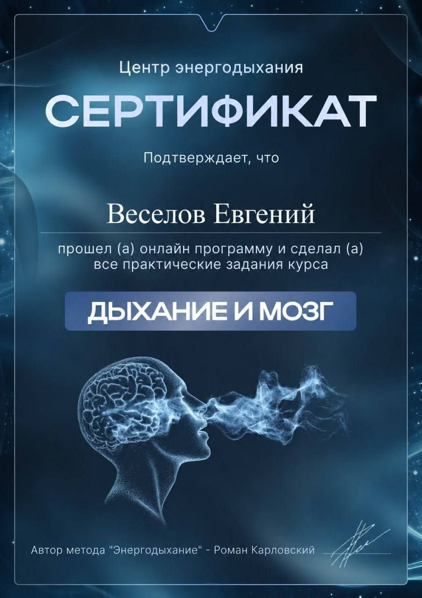

Меня зовут Евгений
Интегральный коуч-терапевт и интегральный психолог. Работаю онлайн, один на один. Здесь — о том, кто я, почему выбрал эту работу и на чём в моём случае строится доверие.
Не только кабинет для сессий
Кроме работы с людьми, я муж и папа. Поэтому тема семьи, границ и вечного выбора между «успевать» и «быть рядом» знакома мне не только по учебникам — я живу в ней каждый день.
Я не верю в готовые рецепты «на всех» и не тороплю с выводами. В первую очередь слушаю и стараюсь увидеть человека целиком, а не только его проблему. Если вы приходите с тревогой, апатией или запутанной ситуацией — это нормально: часто именно оттуда начинается самое важное движение.
— Евгений Веселов
Как я сюда пришёл
Меня всегда занимал один вопрос: почему человек может прекрасно понимать, что ему делать, — и годами не делать. Знать про себя всё, прочитать десяток книг, сходить к специалистам — и продолжать стоять на месте.
Ответ, к которому я пришёл через собственный опыт и через обучение, оказался неприятно простым. Понимание живёт в голове, а решение — во всём человеке сразу: в теле, в чувствах, в тех частях себя, которые никто не спрашивал. Пока эти части не за столом переговоров, любой самый разумный план будет тихо саботироваться изнутри.
Поэтому я и выбрал интегральный подход. Он не заставляет выбирать между «разобраться в себе» и «двигаться к цели» — он занимается и тем и другим одновременно.

Образование
Основа практики — терапевтическая программа «Пробуждение». Дыхательные практики идут дополнением к основному методу, а не заменой ему.


Документы открыты
Нажмите на сертификат, чтобы посмотреть его в полном размере.
Если нужны оригиналы или подробности о программе обучения — просто спросите, покажу.
Я в начале своей практики
В июле 2026 года я завершил терапевтическую программу «Пробуждение» — 128 академических часов в Международном центре интегрального коучинга и здоровья. За спиной у меня нет ни десятка лет стажа, ни сотен клиентов — и я считаю правильным сказать это прямо, а не создавать впечатление обратного. В нише, где принято намекать на огромный опыт, это, пожалуй, самое честное, что я могу вам предложить с порога.
Стоимость сессий ниже той, что просят специалисты с большим стажем. Это честное соотношение, а не скидка-приманка и не игра на срочности.
Никакого конвейера. Я работаю с небольшим числом людей одновременно — значит, у вашего запроса есть время, внимание и полная включённость.
Не обещаю результата и сроков, не ставлю диагнозов, не беру темы вне своей компетенции и не удерживаю тех, кому не подошло.
Принципы, на которых держится работа
Не декларация о намерениях, а то, по чему меня можно проверить на любой встрече.
Ваш темп — главный
Вы не обязаны раскрываться сразу и целиком. Можно не называть имён, опускать детали и говорить ровно столько, сколько сейчас переносимо.
Без оценок и советов
Я не решаю за вас и не подталкиваю к «правильному» ответу. Моя задача — помочь вам услышать собственный.
Конфиденциальность
Содержание сессий не выходит за пределы нашего разговора. Отзывы публикуются только с согласия и без узнаваемых подробностей.
Честные границы
Если ваш запрос требует врача или клинического специалиста, я скажу об этом прямо. Это забота, а не отказ от вас.
Без магии и фатализма
Никаких проклятий, кармы и «пока не отработаете — не получится». Работаем с реальным опытом и живыми механизмами психики.
Право сказать «нет»
Сказать «мне это не подошло» здесь абсолютно нормально. Переубеждать и удерживать я не буду.
Познакомимся?
Первая встреча короткая и нужна в том числе для того, чтобы вы поняли, комфортно ли вам со мной вообще.